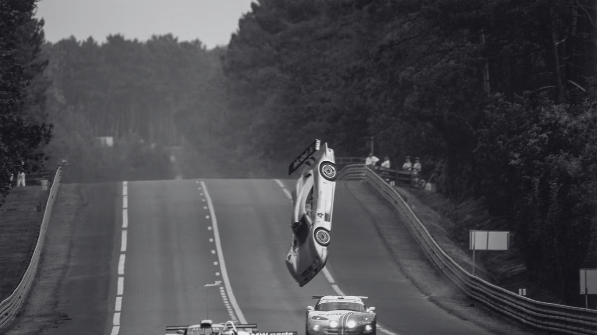
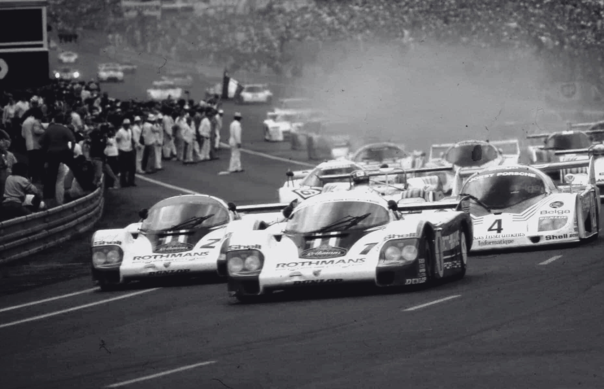
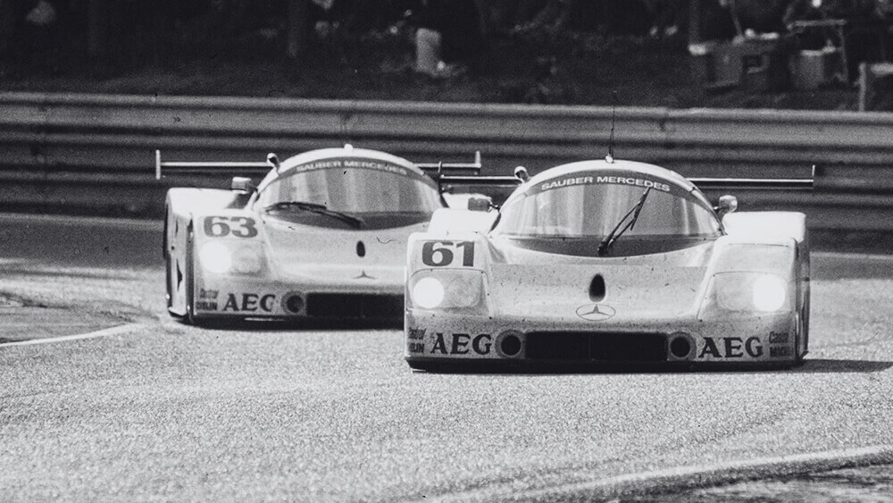
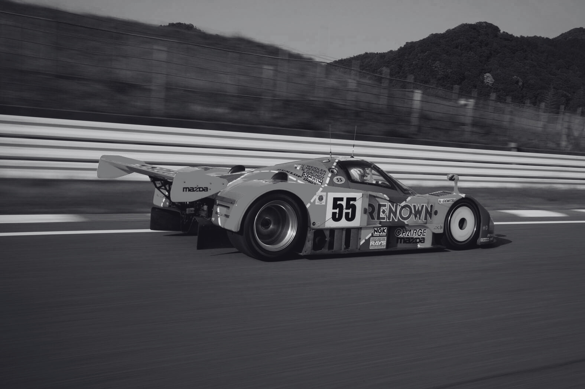
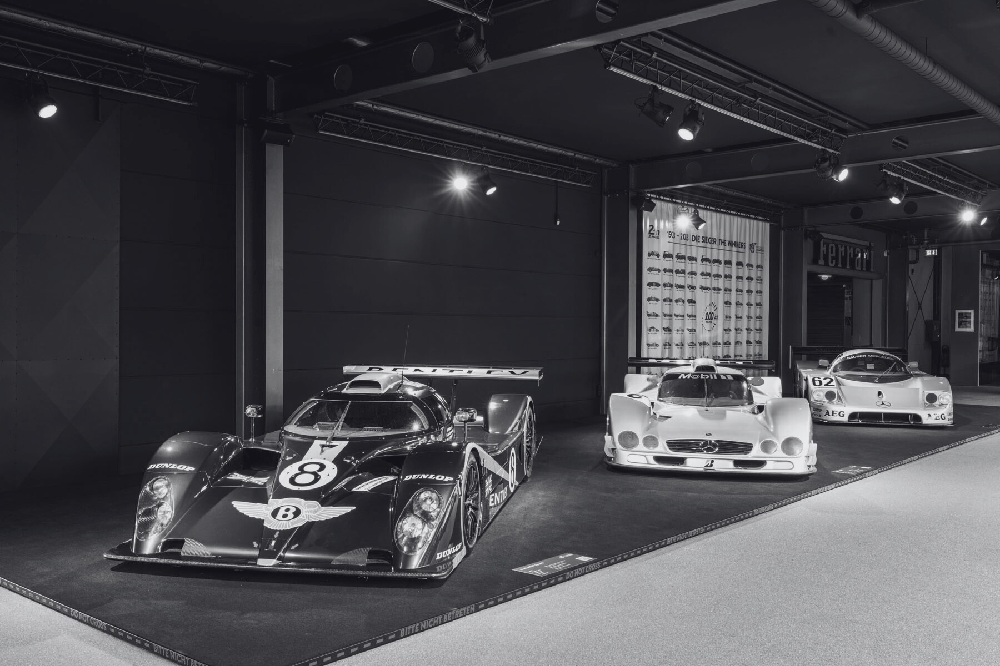

O automobilismo sempre foi mais do que apenas velocidade. É sobre superar limites, testar a resistência e provar que homem e máquina podem vencer os desafios mais extremos. E se há uma categoria que personificou essa essência, foi o Grupo C. Criado pela FIA em 1982, ele não só revolucionou as corridas de resistência, como também se tornou um marco na história do esporte a motor.
O Desafio da Resistência: Mais do que Velocidade

Corridas como as 24 Horas de Le Mans eram (e ainda são) verdadeiros testes de persistência, estratégia e engenharia. Não bastava ser rápido – era preciso ser consistente, administrar o desgaste do carro e suportar horas de pressão física e mental. Os carros do Grupo C foram projetados para isso: máquinas que uniam potência, eficiência e durabilidade, criando uma harmonia perfeita entre tecnologia e pilotagem.
Mas essa busca pela excelência tinha um preço. O Grupo C era uma categoria perigosa. Carros que ultrapassavam 380 km/h, circuitos desgastantes, noites sem visibilidade e estruturas de segurança ainda limitadas para a época. Os pilotos enfrentavam riscos constantes, mas era esse desafio que os motivava – e que cativava os fãs.
A Revolução do Grupo C: Regras que Mudaram o Jogo
No final dos anos 70, o automobilismo de resistência estava em declínio. A FIA então criou o Grupo C com uma regra inovadora: limitar o consumo de combustível. Isso obrigou as equipes a pensar além da velocidade – era preciso eficiência. E assim, a categoria se tornou um laboratório de tecnologia avançada, impulsionando avanços em aerodinâmica, motores, eletrônica e materiais.
Grandes montadoras entraram na disputa: Porsche dominou com o lendário 956 e 962C, sinônimos de confiabilidade e vitórias. Jaguar brilhou com o XJR-9 e XJR-12, equilibrando potência e aerodinâmica. Mercedes-Benz, em parceria com a Sauber, conquistou Le Mans em 1989 com o C9, um carro que unia força e estratégia. As japonesas Toyota, Nissan e Mazda trouxeram inovações ousadas, como motores rotativos e turboalimentação, mostrando que a engenharia poderia ir além.
O Fim de uma Era, mas não do Legado
Nos anos 90, o Grupo C enfrentou crises. A economia global afetou os investimentos, as regras mudaram e os custos subiram. Em 1993, a categoria foi descontinuada, dando lugar a novos formatos. Mas o seu impacto jamais foi esquecido.
O Grupo C provou que vencer uma corrida de resistência não é só sobre quem é mais rápido, mas sobre quem resiste por mais tempo, quem erra menos e quem inova mais. Foi uma época em que a ousadia da engenharia se encontrou com a coragem dos pilotos, criando máquinas que até hoje são celebradas como obras-primas.
O Grupo C Vive no Coração do Automobilismo
Para os fãs, o Grupo C não foi apenas uma categoria – foi uma emoção. O ronco dos motores, a adrenalina das ultrapassagens noturnas, a glória de vencer depois de 24 horas de batalha. Seu legado inspira até hoje, lembrando-nos de que, no automobilismo, resistência e paixão são tão importantes quanto a velocidade. E enquanto houver quem ame corridas, o Grupo C continuará sendo lembrado como um dos capítulos mais intensos, inovadores e emocionantes da história do esporte.